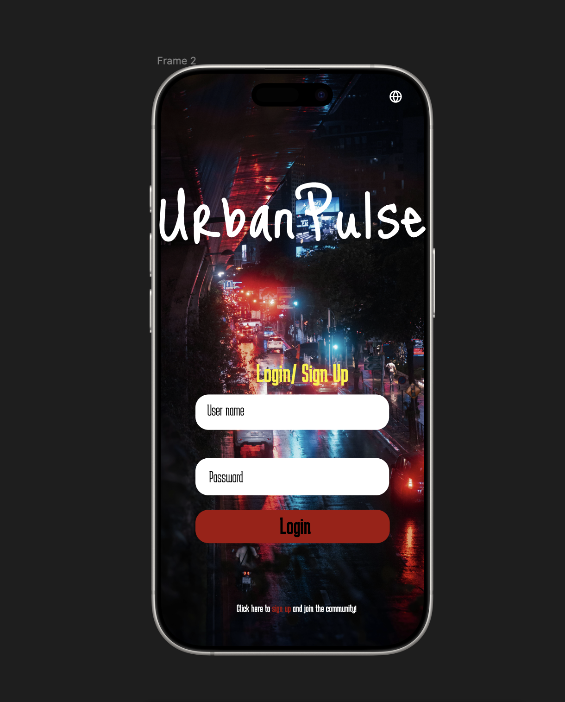
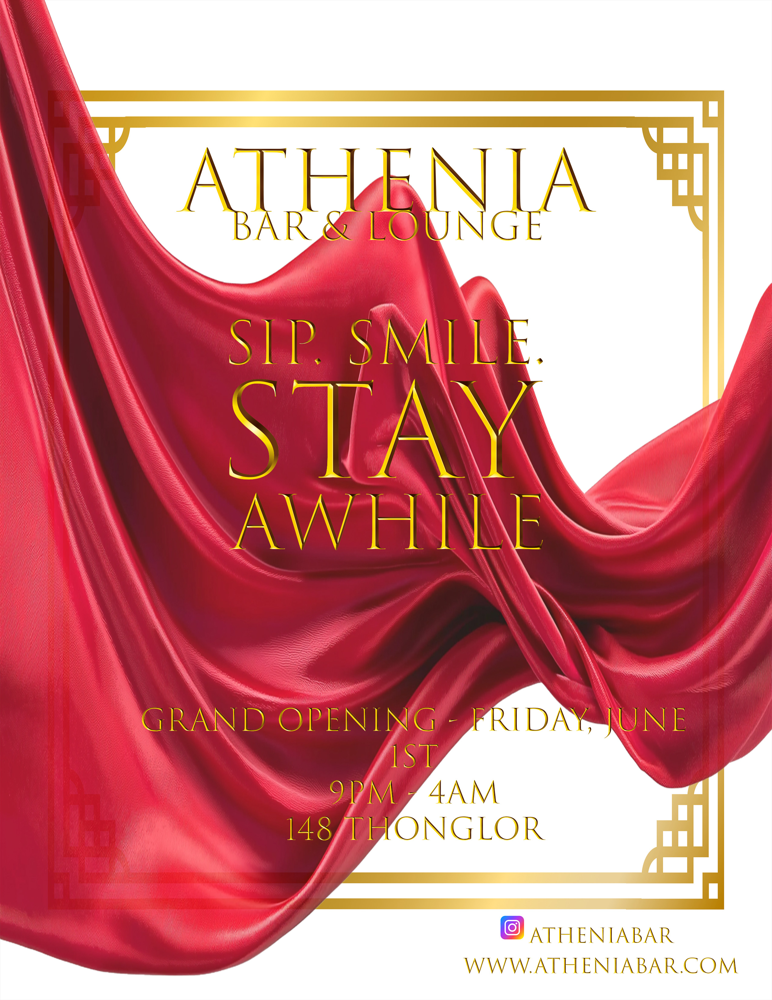
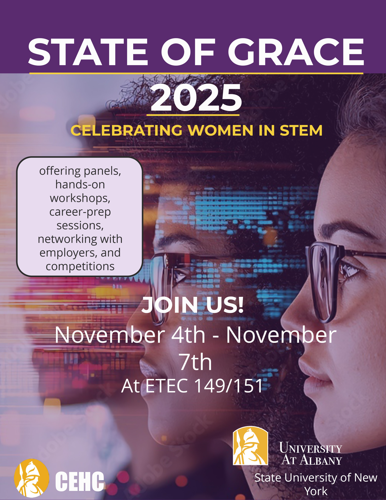

UrbanPulse
Overview: UrbanPulse is a mobile UX concept designed to help users discover nightlife events and connect with others who share similar social interests.
Problem: Young adults often struggle to find safe, relevant nightlife experiences or meet people with similar interests conveniently.
Process: I created user personas, interaction flows, and mobile UI screens focused on clarity, safety, and engagement. The design emphasizes intuitive navigation, profile interaction, and real-time social discovery.
Solution & Impact: UrbanPulse demonstrates my ability to design socially driven digital experiences that prioritize usability, community connection, and modern mobile UX patterns.
Class: Human-Computer Interactive Design
- Google Slides
- Sketch Pad
- Figma
RoamReady
Overview: RoamReady is a responsive travel itinerary planning website designed to help users easily search destinations, organize trips, and manage personal travel details in one streamlined platform.
Problem: Many travel planning tools are cluttered, difficult to navigate, or lack personalization, making it hard for users to efficiently organize their trips.
Process: I designed the interface structure, user flows, and responsive layouts using HTML, CSS, JavaScript, PHP, and MySQL. I focused on usability, accessibility, and clear navigation while implementing interactive features such as destination search, itinerary creation, and account management.
Solution & Impact: The final product delivers a clean, user-centered planning experience that simplifies trip organization and demonstrates my ability to design and build full-stack, interactive digital products.
Class: Intermed Interactive Design
- HTML
- CSS
- JavaScript
- PHP
- JSON
- XAMPP
- Filezilla
- GitHub

Athenia Bar and Lounge
Overview: Athenia is a modern lesbian-centered bar concept in Bangkok designed to create a safe, elegant, and welcoming nightlife experience through cohesive branding, spatial atmosphere, and community-focused design.
Problem: Many nightlife environments lack intentional design for queer women, often feeling exclusionary or disconnected from community needs, highlighting the need for a space centered on safety, inclusivity, and emotional comfort.
Process: I conducted research on LGBTQ+ nightlife gaps, developed the brand voice “Sip, smile. Stay awhile.”, created a refined color palette of velvet, black, and gold, and planned the visual identity and experiential elements to support comfort, connection, and long-term sustainability.
Solution & Impact: The final concept demonstrates my ability to apply UX thinking beyond digital products, combining inclusive brand strategy, emotional experience design, and real-world business considerations to create a meaningful community-focused space.
Class: Digital Design
- Adobe Photoshop
- Adobe Illustrator
- Canva

CEHC State of Grace Event
Overview: A collection of branded event posters and promotional graphics created to communicate information clearly while maintaining a strong visual appeal.
Problem: Event marketing materials must quickly capture attention while remaining readable and brand-consistent.
Process: I applied typography hierarchy, color theory, and layout balance to design engaging visuals optimized for digital sharing and audience engagement.
Solution & Impact: These works highlight my graphic design foundation and ability to translate messaging into compelling visual storytelling.
Class: Digital Design
- Adobe Illustrator
- Adobe Photoshop